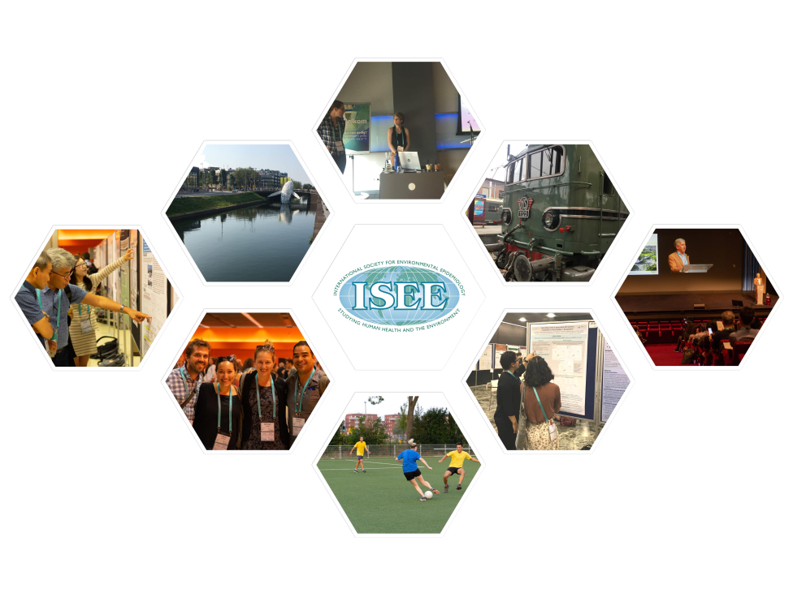

The North America Chapter (NAC) was established by the ISEE Council in January, 2019. Its mission is to promote and strengthen scientific research in environmental epidemiology, with a focus on the countries within this region, considering the wide range of issues that are both specific to them, and similar to those faced by ISEE worldwide. As this is a critical time in terms of environmental policies for North America, the role of this chapter will be to communicate with, and coordinate and concentrate, the efforts and actions of members.
The NAC consists of the United States, Canada, Greenland, and Bermuda.
The NAC will support the mission of the ISEE by:
Emphasis will be on civic engagement regarding policy in Canada and the United States.